<!doctype html>
<html lang="en">
<head>
<meta charset="utf-8">
<!-- CUSTOMIZE THIS! -->
<title>DH-E02_Digitalisierung</title>
<meta name="author" content="Christof Schöch">
<!-- END -->
<meta name="description" content="Slides">
<meta name="apple-mobile-web-app-capable" content="yes">
<meta name="apple-mobile-web-app-status-bar-style" content="black-translucent">
<meta name="viewport" content="width=device-width, initial-scale=1.0, maximum-scale=1.0, user-scalable=no, minimal-ui">
<link rel="stylesheet" href="css/reveal.css">
<link rel="stylesheet" href="css/theme/simple.css" id="theme">
<!-- Code syntax highlighting -->
<link rel="stylesheet" href="lib/css/zenburn.css">
<!-- Printing and PDF exports -->
<script>
var link = document.createElement( 'link' );
link.rel = 'stylesheet';
link.type = 'text/css';
link.href = window.location.search.match( /print-pdf/gi ) ? 'css/print/pdf.css' : 'css/print/paper.css';
document.getElementsByTagName( 'head' )[0].appendChild( link );
</script>
<!--[if lt IE 9]>
<script src="lib/js/html5shiv.js"></script>
<![endif]-->
</head>


<body>
<div class="reveal">
<div class="slides">
<section data-markdown="" data-separator="^\n--\n" data-separator-vertical="^\n---\n" data-charset="utf-8" data-background-image="img/basics/uni-trier-mini.png" data-background-size="50px" data-background-position="top right">
<script type="text/template">

<br/>
## Digitalisierung<br/>
<hr/>
<br/>
<br/>Vorlesung *Einführung in die Digital Humanities*
<br/>MSc Digital Humanities | Wintersemester 2018/19
<br/>
<br/>Prof. Dr. Christof Schöch
<br/>
<br/>
<hr/>
<br/>

--
# Einstieg


---
## Semesterüberblick

<small>

* 23.10.: Digital Humanities im Überblick
* **30.10.: Digitalisierung: Text und Bild**
* 06.11.: Grundbegriffe des Programmierens
* 13.11.: Datenmodellierung 1: Modellierung
* 20.11.: Datenmodellierung 2: Datenbanken
* 27.11.: Datenmodellierung 3: Text, Markup, XML
* 04.12.: Digitale Edition
* 11.12.: Geschichte der Digital Humanities
* 18.12.: Informationsvisualisierung
* 22.12.-6.1.: *Weihnachtspause*
* 08.01.: Natural Language Processing
* 15.01.: Quantitative Analyse 1: Stilometrie, Topic Modeling
* 22.01.: Quantitative Analyse 2: Superv. Machine Learning
* 29.01.: Open Humanities
* 05.02.: Klausurtermin


</small>

---
## Sitzungsüberblick
<br/>
1. Digitalisierung allgemein
2. Digitalisierung von Bildern
3. Digitalisierung von Text (OCR)


--
# 1. Digitalisierung allgemein

---
## Was ist Digitalisierung?
<br/>
>Der Begriff Digitalisierung bezeichnet allgemein die Veränderungen von Prozessen, Objekten und Ereignissen, die bei einer zunehmenden Nutzung digitaler Geräte erfolgt. Im ursprünglichen und engeren Sinne ist dies die Erstellung digitaler Repräsentationen von physischen Objekten, Ereignissen oder analogen Medien. ("Digitalisierung", Wikipedia)
<br/>
<br/>
>Digitization -- the conversion of an analogue signal or code into a digital signal or code -- is the bedrock of both digital library holdings and digital humanities research. (Melissa Terras 2012)

---
## Warum überhaupt digitalisieren?
<br/>
* Bessere Verfügbarkeit (ortsunabhängig, gleichzeitig) <!-- .element: class="fragment" data-fragment-index="1" -->
* Bessere Zugänglichkeit (umfangreiche Bände, große Karten) <!-- .element: class="fragment" data-fragment-index="2" -->
* virtuelle Zusammenführung dislozierter Bestände <!-- .element: class="fragment" data-fragment-index="3" -->
* Konservierung und Schonung fragiler/wertvoller Objekte <!-- .element: class="fragment" data-fragment-index="4" -->
* Aufbereitung des digitalen Bildes (bspw. Bildschärfe, Kontrast, Zoom etc.) <!-- .element: class="fragment" data-fragment-index="5" -->
* Verbesserte Analysemöglichkeiten (bspw. Volltext) <!-- .element: class="fragment" data-fragment-index="6" -->
* Integration in Unterrichtsmaterial <!-- .element: class="fragment" data-fragment-index="7" -->
* Verlustfreies Kopieren möglich <!-- .element: class="fragment" data-fragment-index="8" -->

---
## Warum *nicht* digitalisieren?
<br/>
* Kosten für Digitalisierung (Sach- und Personalkosten) <!-- .element: class="fragment" data-fragment-index="1" -->
* Vollständige Digitalisierung der menschlichen Überlieferung unrealistisch <!-- .element: class="fragment" data-fragment-index="2" -->
* Eventuelle Beschädigung fragiler / wertvoller Objekte <!-- .element: class="fragment" data-fragment-index="3" -->
* Digitalisate können Original nicht immer ersetzen <!-- .element: class="fragment" data-fragment-index="4" -->
* Folgekosten für Archivierung / Langzeitverfügbarkeit <!-- .element: class="fragment" data-fragment-index="5" -->

---
## Begrifflichkeit
<br/>
* Digitalisat
* Digitale Repräsentationen
* Digitales Abbild, Modell, Surrogat
* analog (von gr. *analogos*, verhältnismäßig)
* digital (von lat. *digitus*, Finger)
* Analog-Digital-Wandler

---
## Analog vs. digital
<br/>
* analog = "zeit-/raum- und wertekontinuierlich"
* digital = zeit-/raum- und wertediskret"
* Digitalisierung
    * Zeit-/Raumquantisierung (mit bestimmter Auflösung)
    * Wertquantisierung (mit bestimmter Abtastrate)

---
## Quantisierung

<a href="img/E02/digitalisierung1.png">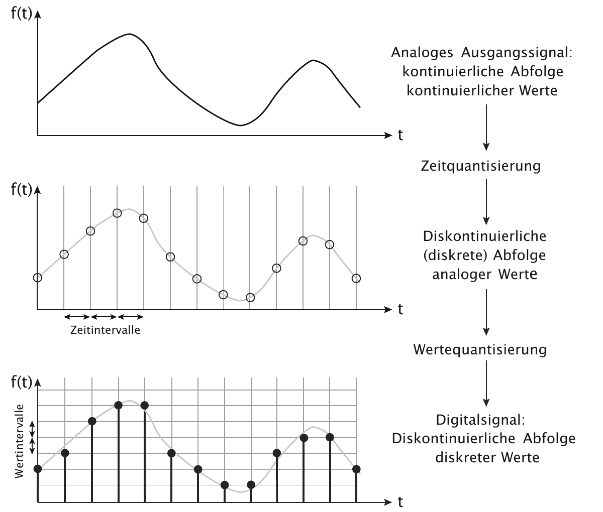</img></a>
<br/>(Bildquelle: Rehbein 2017)
<br/>Beispiele: Tonhöhenverlauf; Dicke eine Vase;<br/>Schwarzwertverteilung einer Druckseite


--
# 2. Digitalisierung von Bildern

---
## (A) Digitale Bildformate

---
## Digitale Bildformate
<br/>
* **Rastergrafik**: "zweidimensionale <br/>Matrix der Bildpunkte (Pixel)"
<br/>vs.
* **Vektorgrafik**: Repräsentation als <br/>Menge "elementarer Zeichenroutinen"

---
## Raster- und Vektorgrafik
<a href="img/E02/circle.png"></img></a>&nbsp;&nbsp;&nbsp;&nbsp;&nbsp;&nbsp;&nbsp;&nbsp;
<a href="img/E02/circle.svg">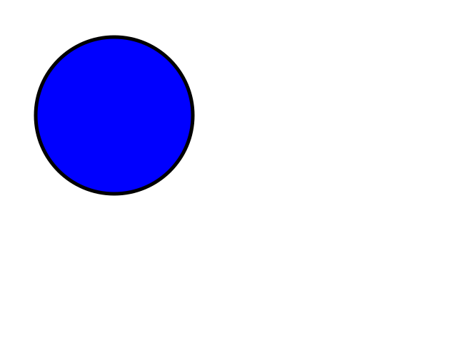</img></a>

---
## Prinzip der Rastergrafik
<a href="img/E02/digitalisierung2.png">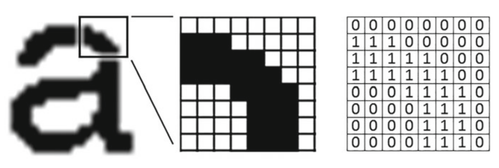</img></a>
<br/>(Bildquelle: Rehbein 2017)
<br/>Parameter: Bildgröße (Pixel) und Farbtiefe (Bit)

---
## Parameter Bildgröße
<br/>
* bspw. 8x8 Pixel / 64 Pixel
* Bildgröße ist unabhängig von der Pixelgröße!
* Auflösung = Pixeldichte = Pixel pro Fläche<br/>(bspw. dpi oder ppi)
* Je höher die Pixeldichte, desto geringer die Pixelgröße


---
## Parameter Farbtiefe
<br/>
* monochrom <!-- .element: class="fragment" data-fragment-index="1"-->
    * 1 Bit: 2 Werte: s/w
    * 2 Bit: 2^2 Werte: 4 Graustufen
    * 8 Bit: 2^8 Werte = 256 Graustufen
* farbig (3 Kanäle, RGB)  <!-- .element: class="fragment" data-fragment-index="2"-->
    * 3 x 8 Bit = (2^8)^3 Werte = ca. 16 Millionen Farben

---
## Farbtiefe
<br/>
<a href="img/E02/farbtiefe1.png">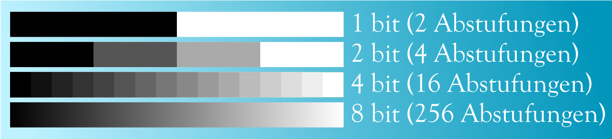</img></a>
<br/><br/>
<small>
Bildquelle: Thomas R. Schwarz, Wikipedia,  https://de.wikipedia.org/wiki/Farbtiefe_(Computergrafik)#/media/File:Farbtiefe.svg, gemeinfrei.
</small> 


---
## Warum Farbtiefe?
<a href="img/E02/farbtiefe2.png">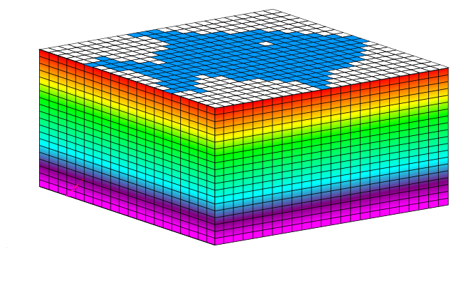</img></a>

<small>
Modifiziert von Bildquelle: Benutzer Friedrich Graf, https://de.wikipedia.org/wiki/Datei:Punktdichte%2BFarbtiefe.svg, Lizenz Creative Commons Attribution 3.0
</small> 


---
## Farbräume: RGB
<a href="img/E02/Farbraum_RGB.jpg">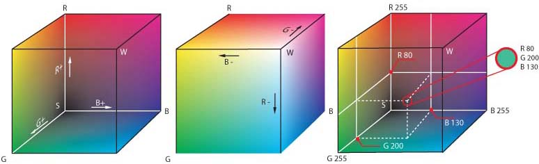</img></a>

<small>
RGB = Red, Green, Blue. Bildquelle: https://commons.wikimedia.org/wiki/File:RGB_farbwuerfel.jpg, Lizenz <a href="https://creativecommons.org/licenses/by-sa/3.0/deed.en">CC BY-SA 3.0</a>
</small> 


---
## Farbräume: HSL
<a href="img/E02/Farbraum_HSL.jpg">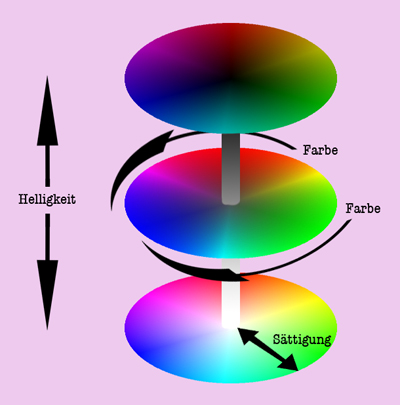</img></a>

<small>
HSL = Hue, Saturation, Lightness. Bildquelle: Benutzer Friedrich Graf, https://de.wikipedia.org/wiki/Farbraum#/media/Datei:Farbstruktur.jpg, Lizenz <a href="https://creativecommons.org/licenses/by-sa/2.0/deed.en">CC BY-SA 2.0</a>
</small> 


---
## Vektorgrafiken (SVG)
<br/>
* SVG = Scalable Vector Grafics <!-- .element: class="fragment" data-fragment-index="1"-->
* Nicht pixelbasiert <!-- .element: class="fragment" data-fragment-index="1"-->
* verwendet "grafische Primitive" in einem Koordinatensystem <!-- .element: class="fragment" data-fragment-index="1"-->
* Primitive <!-- .element: class="fragment" data-fragment-index="2"-->
    * Punkte, Linien, Ellipsen, Polygone, Rechteck
    * Farbe, Strichform, Füllung
* Koordinatensystem <!-- .element: class="fragment" data-fragment-index="3"-->
    * meist zweidimensional (x und y-Achse)
    * z-Ordnung: Reihenfolge bei Überlappung

---
## mycircle.svg
<br/>
<pre>
<code>
<?xml version="1.0"?>
<svg width="400" height="400" xmlns="http://www.w3.org/2000/svg">
  <title>my circle</title>
  <g>
    <ellipse cx="200" cy="200" rx="100" ry="100"
    fill="darkblue" stroke="darkgreen" stroke-width="10" />
  </g>
</svg>
</code>
</pre>

---
## mycircle.svg
<a href="img/E02/mycircle.svg">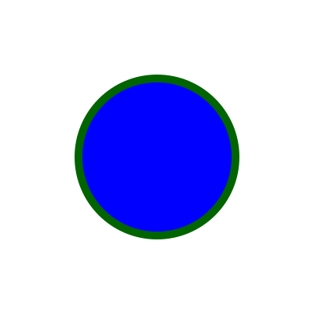</img></a>

---
## (B) Bilddigitalisierung

---
## Bilddigitalisierung
<br/>
* Erstellen einer visuellen, digitalen Repräsentation <!-- .element: class="fragment" data-fragment-index="1"-->
* Mit Digitalkamera oder Scanner <!-- .element: class="fragment" data-fragment-index="2"-->
* Bildgebendes Prinzip: lichtempfindliche Dioden <!-- .element: class="fragment" data-fragment-index="3"-->
* Analog-Digital-Wandler <!-- .element: class="fragment" data-fragment-index="4"-->
    * Anzahl der Dioden = Bildgröße
    * Dioden pro Fläche = Auflösung
    * Anzahl der registrierten Farbwerte = Farbtiefe

---
## Bildsensor einer Digitalkamera
<br/>
<a href="img/E02/camera-sensor.jpg">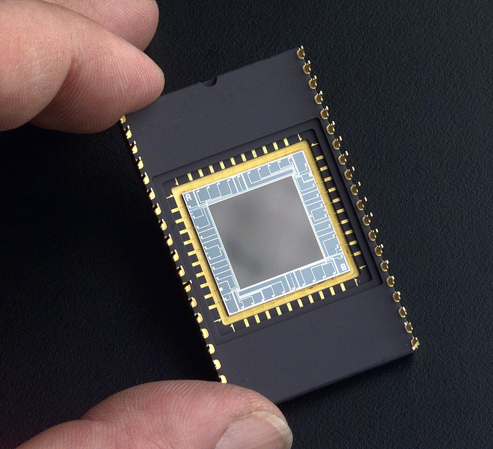</img></a>

<small>
Bildquelle: NASA, Wikipedia, https://de.wikipedia.org/wiki/Datei:Delta-Doped_Charged_Coupled_Devices_(CCD)_for_Ultra-Violet_and_Visible_Detection.jpg, gemeinfrei.
</small>


---
## Bayer-Muster
<a href="img/E02/bayer-matrix.png">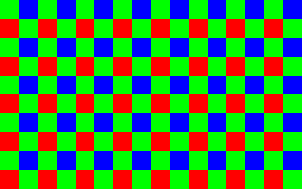</img></a>
<br/>
50% Grün, 25% Rot, 25% Blau; 1 Farbe pro Pixel; Interpolation.
<br/><br/>
<small>Bildquelle: Nutzer Amada44, https://de.wikipedia.org/wiki/Bayer-Sensor#/media/File:Bayer_matrix.svg, Lizenz: gemeinfrei.</small>


---
## Scanner
<br/>
* Lichtempfindliche Dioden (wie bei der Digitalkamera) <!-- .element: class="fragment" data-fragment-index="1"-->
* Aber: in einer langen Reihe angeordnet <!-- .element: class="fragment" data-fragment-index="2"-->
* Meist drei Reihen für die drei Grundfarben <!-- .element: class="fragment" data-fragment-index="3"-->
* Flachbettscanner: Glasplatte und bewegliche Sensorenleiste <!-- .element: class="fragment" data-fragment-index="4"-->
* Dokumentenscanner: Feste Sensorenleiste, Papier wird daran vorbeigezogen <!-- .element: class="fragment" data-fragment-index="5"-->

---
## Sensor eines Flachbettscanners
<a href="img/E02/CCD_line_sensor.jpg">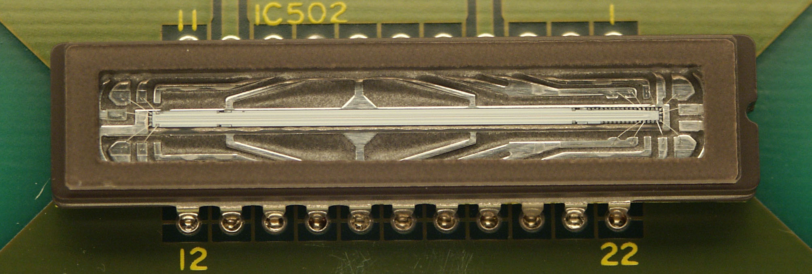</img></a>


<small>
Benutzer Stefan506, https://de.wikipedia.org/wiki/Datei:CCD_line_sensor.JPG, Lizenz: Creative Commons Attribution.
</small> 

---
## Buchwippe
<a href="img/E02/zeutschel.jpg">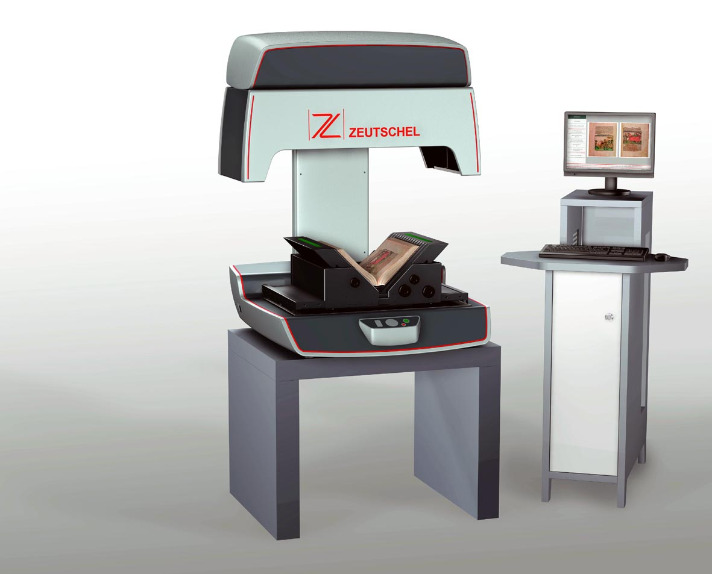</img></a>

---
## Scanroboter
https://www.youtube.com/watch?v=cmhIJOqepVU

---
## "Book Flipping Scanner"
<br/>
https://www.youtube.com/watch?v=03ccxwNssmo


--
# 3. Digitalisierung von Text

---
## Manuell oder automatisch?
<br/>
* Manuelle Texterfassung <!-- .element: class="fragment" data-fragment-index="1"-->
    * Transkription / "double keying"
    * Wird oft an externe Dienstleister vergeben
    * Genauigkeit: bis zu 99,997% Zeichenkorrektheit
* Automatische Texterkennung <!-- .element: class="fragment" data-fragment-index="2"-->
    * Optical Character Recognition (OCR)
    * Endnutzer-Software oder forschungsnahe Software
    * Nutzt Mustererkennung, Machine Learning und/oder Deep Learning

---
## Die Schritte der OCR
<br/>
1. Vorverabeitung der Vorlage
2. Segmentierung
3. Zeichenerkennung
4. Nachbereitung

---
## 1. Vorverabeitung der Vorlage
<br/>
* Bildkorrekturen <!-- .element: class="fragment" data-fragment-index="1"-->
    * Kontrast
    * Verzerrungen
    * Rotation
* Binarisierung (optional) <!-- .element: class="fragment" data-fragment-index="2"-->
    * Transformation zu s/w-Bild

---
## 2. Segmentierung
<br/>
* Layout-Analyse <!-- .element: class="fragment" data-fragment-index="1"-->
    * Textblöcke vs. Bildblöcke
    * Lauftitel, Überschrift, Absatz, Seitenzahl, etc.
* Segmentierung <!-- .element: class="fragment" data-fragment-index="2"-->
    * Zeilenerkennung
    * ggfs. Wörter und Buchstaben (aber: Ligaturen)

---
## 3. Zeichenerkennung
<br/>
* Musterabgleich oder Machine Learning <!-- .element: class="fragment" data-fragment-index="1"-->
    * Musterabgleich: prototypische Buchstaben, Ähnlichkeit als Pixelüberlappung
    * Machine Learning / Deep Learning: feature-basiert (Kanten, Kurven, etc.)
* In beiden Fällen: <!-- .element: class="fragment" data-fragment-index="2"-->
    * Anpassung an Schriftarten durch Training etc. 
    * Ligaturen sind eine Herausforderung
    

---
## 4. Nachbereitung
<br/>
* Wörterbuchbasiert: Liste von Wörtern, die in einer Sprache vorkommen <!-- .element: class="fragment" data-fragment-index="1"-->
* Sprachmodellbasiert: bspw. Wahrscheinlichkeit der Abfolge von Buchstaben in einer Sprache <!-- .element: class="fragment" data-fragment-index="2"-->

---
## Software
<br/>
* Finereader (seit 1993; Abby; proprietär)
* OCRopus (seit 2007; Google / DFKI; Open Source)
* Tesseract (seit 1985; HP, Google; Open Source)
* OCR4all (seit 2018; Universität Würzburg; Open Source)


---
## Faktoren für die OCR-Qualität
<br/>
* Druckqualität (u.a. verblasste Buchstaben) <!-- .element: class="fragment" data-fragment-index="1"-->
* Komplexität des Layouts (Marginalien, etc.) <!-- .element: class="fragment" data-fragment-index="2"-->
* verwendete Schriftart (u.a. Fraktur / Antiqua) <!-- .element: class="fragment" data-fragment-index="3"-->
* Anzahl der verwendete Sprache(n) <!-- .element: class="fragment" data-fragment-index="4"-->
* moderne oder historische Sprachstufe (u.a. Zeicheninventar, Abkürzungen) <!-- .element: class="fragment" data-fragment-index="5"-->
* manuelle Unterstreichungen, Annotationen, Marginalien <!-- .element: class="fragment" data-fragment-index="6"-->
* Bildqualität des Scans (u.a. Auflösung, Ausrichtung) <!-- .element: class="fragment" data-fragment-index="7"-->

---
## OCR-Qualität
<br/>

| Zeichen-<br/>Genauigkeit | Verfahren   | Zweck          |
|------------------|------------------|--------------------|
| 99,997%          | double keying mit Korrekturen|Editionen  |
| 99,95%           | double keying              | Negativsuche|
| 99%              | OCR bei sehr guter Vorlage | Text Mining |
| 95%              | OCR bei noch guter Vorlage | Positivsuche|


---
## Andere Bereiche der Digitalisierung
<br/>
* Multispektralaufnahmen
* Videodigitalisierung
* Laserscanning (Geländemodelle)
* Audiodigitalisierung (Musik, Sprache)
* 3D-Digitalisierung (Skulpturen, Artefakte)
* Handschriftenerkennung (HTR)
* Optical Music Recognition :-)
* uvm.

--
# 4. Nach der Digitalisierung: <br/>Langzeitverfügbarkeit


---
## Langzeitarchivierung (LZA)
<br/>
> *Langzeit* bedeutet für die Bestandserhaltung digitaler Ressourcen nicht die Abgabe einer Garantieerklärung über fünf oder fünfzig Jahre, sondern die verantwortliche Entwicklung von Strategien, die den beständigen, vom Informationsmarkt verursachten Wandel bewältigen können. [...] <br/> *Archivieren* bedeutet [...] mehr als nur die dauerhafte Speicherung digitaler Informationen auf einem Datenträger. Vielmehr schließt es die Erhaltung der dauerhaften Verfügbarkeit und damit eine Nachnutzung und Interpretierbarkeit der digitalen Ressourcen
mit ein. <br/> (Heike Neuroth in nestor-Handbuch 2012)

---
## Zwei Aspekte von LZA
<br/>
* Archivierung: Erhaltung der Datensubstanz <!-- .element: class="fragment" data-fragment-index="1"-->
    * sog. "bit-stream-preservation" (rein technische Ebene)
* Nachnutzbarkeit: Erhaltung der Benutzbarkeit <!-- .element: class="fragment" data-fragment-index="2"-->
    * Verwendung von Standards; Dokumentation
    * Migration auf aktuelle Datenformate (offene Standards!)
    * Software-seitige Emulation von Systemumgebungen
    * Interoperabilität: technisch und intellektuell

---
## Praktisches zur Langzeitverfügbarkeit
<br/>
* Bild-Digitalisate: <!-- .element: class="fragment" data-fragment-index="1"-->
    * unkomprimierten "Master" archivieren ("Baseline TIFF")
    * JPEG oder PNG für die Präsentation im Netz
* Volltext-Digitalisate: <!-- .element: class="fragment" data-fragment-index="2"-->
    * in Standard-Format archivieren (XML-TEI)
    * ggfs. auch die Bild-Text-Link-Information, ALTO-Format (Analyzed Layout and Text Object)
* Alle Digitalisattypen: Metadaten <!-- .element: class="fragment" data-fragment-index="3"-->
    * Administrativ, technisch, deskriptiv
    * in Standardformaten festhalten
    * Jedes Objekt mit Identifier versehen


--
# Abschluss

---
## Fragen?

---
## Lektürehinweise
<small>

* Malte Rehbein, "Digitalisierung", in: *Digital Humanities: Eine Einführung*, hg. von Fotis Jannidis, Hubertus Kohle und Malte Rehbein. Stuttgart: Metzler, 2017, S. 179-196.
<br/>
<br/>
**Weitere Empfehlungen**
* "DFG-Praxisregeln Digitalisierung", Bonn: Deutsche Forschungsgemeinschaft, 2016. http://www.dfg.de/formulare/12_151/
* Melissa Terras, "Digitization and digital resources in the humanities", *Digital Humanities in Practice*, hg. von Claire Warwick, Melissa Terras, Julianne Nyhan. London: Facet, 2012, 47-70.
<br/>
<br/>
**Darüber hinaus**
* *nestor-Handbuch: Eine kleine Enzyklopädie der digitalen Langzeitarchivierung*. Version 2.3, hg. von Heike Neuroth, Achim Oßwald, Regine Scheffel, Stefan Strathmann, Karsten Huth. Göttingen: nestor, 2010. http://www.nestor.sub.uni-goettingen.de/handbuch/index.php (Einleitung sowie Kapitel 4.2 zu OAIS)

</small>

--
## Nächste Sitzung
<br/>
* Thema: Einstieg ins Programmieren
* "Software development is a learning experience with written code as side effect." (m2spring auf reddit.com)
* Vorbereitung: Fotis Jannidis, "Grundbegriffe des Programmierens" (Kapitel 6 im Lehrbuch)

---
<br/>
<br/>
<br/>
<br/>
<br/>Christof Schöch, 2018
<br/>http://www.christof-schoech.de
<br/>
<hr/>
Lizenz: [Creative Commons Attribution 4.0](https://creativecommons.org/licenses/by/4.0/)
<br/>


</script>

<!-- DON'T TOUCH UNLESS YOU KNOW WHAT YOU'RE DOING :-) -->
</div>
<script src="lib/js/head.min.js"></script>
<script src="js/reveal.js"></script>
<script>
// Full list of configuration options available at:
// https://github.com/hakimel/reveal.js#configuration
Reveal.initialize({
    controls: true,
    progress: true,
    history: true,
    center: true,
    transition: 'slide', // none/fade/slide/convex/concave/zoom
    // Optional reveal.js plugins
    dependencies: [
        { src: 'lib/js/classList.js', condition: function() { return !document.body.classList; } },
        { src: 'plugin/markdown/marked.js', condition: function() { return !!document.querySelector( '[data-markdown]' ); } },
        { src: 'plugin/markdown/markdown.js', condition: function() { return !!document.querySelector( '[data-markdown]' ); } },
        { src: 'plugin/highlight/highlight.js', async: true, callback: function() { hljs.initHighlightingOnLoad(); } },
        { src: 'plugin/zoom-js/zoom.js', async: true },
        { src: 'plugin/notes/notes.js', async: true }
        ]
    });
</script>
</body>
</html>
